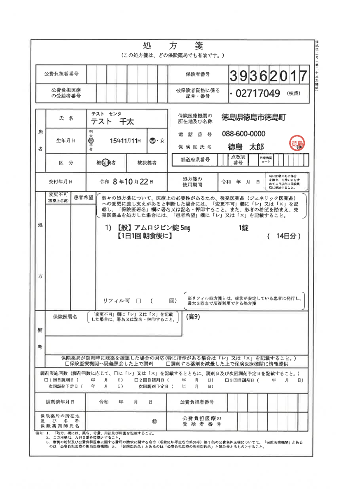
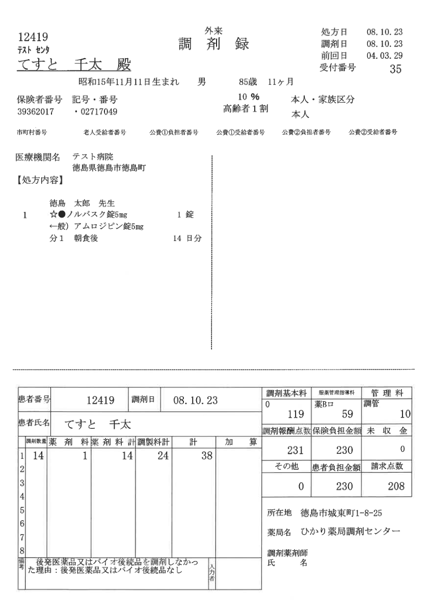

サンプル1問・改訂版
🔎 調剤録まちがい探しクイズ
処方箋と調剤録を見比べて、調剤録の間違いを2か所探してください！
※同じ氏名の間違いは、上の記載でも下の記載でも正解。両方押しても1か所分です。
見つけた数 0 / 2
残り 2 か所
処方箋

調剤録（間違いは2か所）

処方箋と調剤録を見比べて、調剤録の間違いを2か所探してください！
※同じ氏名の間違いは、上の記載でも下の記載でも正解。両方押しても1か所分です。

